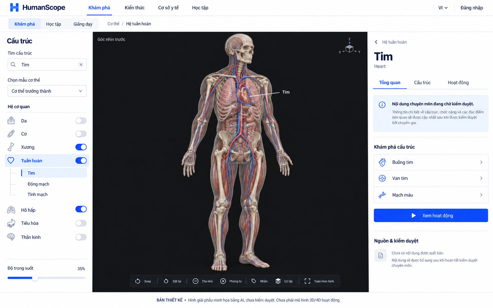

Khám phá cơ thể, từng lớp một.
Ba bản thiết kế cho không gian khám phá giải phẫu. Chọn một màn hình để xem bố cục và luồng dự kiến. Các nút nằm trong ảnh là hình minh họa; đây chưa phải ứng dụng giải phẫu.

Hình tham chiếu AI, chưa kiểm duyệt giải phẫu. Bộ này thể hiện hướng thiết kế. Chưa có file GLB, mesh chọn được hoặc hoạt ảnh sinh lý chạy thật.
Ngôn ngữ thiết kế
Nền trắng, xanh dương #163cff, navy #111c35, viền mảnh và vùng quan sát charcoal. Giữ màu mô hình tự nhiên và công cụ gọn theo HunpeoLabs/Satsunic.
- Desktop: cây cấu trúc · canvas · nội dung.
- Mobile: canvas và sheet mở theo nhu cầu.
- 4D: tập trung cơ quan, giai đoạn, timeline và chú thích đồng bộ.
Hợp đồng mô hình người
Hình dáng, chất liệu và góc nhìn trong ảnh là tham chiếu. Topology, rig, mapping giải phẫu và chuyển động phải được dựng và kiểm duyệt riêng.
- 12 nhóm giải phẫu, mesh và định danh ổn định.
- Camera, lớp, lựa chọn và animation cùng phiên bản.
- Hoạt ảnh bằng rig/morph đã duyệt, không phóng to toàn thân theo nhịp.
Nền tảng dự kiến: Next.js · NestJS · Three/R3F · Google Cloud · Firebase.